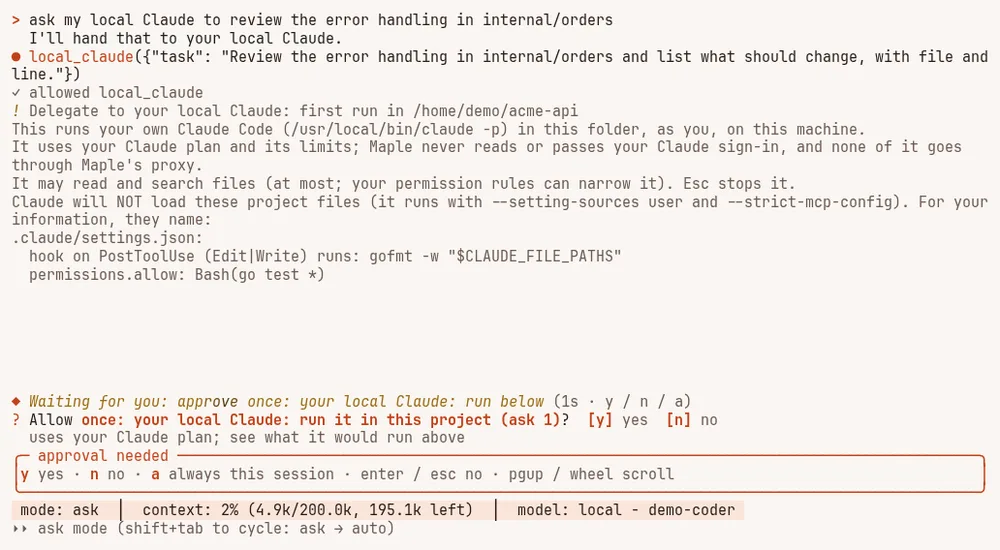
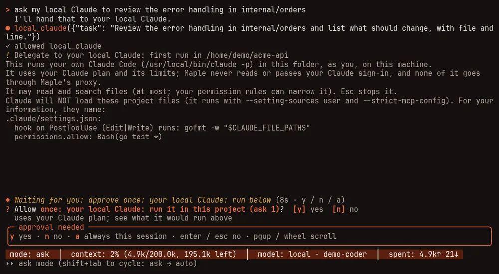

Subagents #
On this page
A subagent is a second session that the main one hands a small, self-contained job to: "find where the retry logic lives", "review this diff", "plan the change". It has its own instructions, its own list of tools and optionally its own model. It does not see your conversation, and only its final report comes back, so a long search stays out of the main conversation.
The ones you already have #
| Name | What it does |
|---|---|
general-purpose | Takes any self-contained task. Has the same tools as the main session |
explore | Reads and searches the project and answers questions about it. Cannot change anything |
plan | Studies the code and returns a step-by-step plan. Cannot change anything |
The model uses them by itself when a job fits. To run one yourself, type @ and the name, then the job:
@explore where is the retry logic, and what limits it?Press Tab after the @ to complete a name. /agent explore where is the retry logic? does the same.
Watching them work #
While a subagent runs, a small list appears just above the input box (which does not move):
● main
◯ explore reading the retry code 31s · ↓ 339.6k tokens
! plan waiting for your approval 12s · ↓ 1.2k tokens◯ is running, ! is waiting for you, ✓ finished, ✗ failed or stopped. Press the down arrow from an empty
input box (or ctrl+t from anywhere) to move into the list, then:
- the arrow keys choose between
mainand a subagent; - Enter on a subagent, or a click on its row, shows what it is doing, live and read-only (Esc goes back);
- x, then y, stops the chosen subagent;
- c folds the list into a count on the status line ("2 agents").
When a subagent needs your approval to write a file or run a command, the question comes to you like any other, with the subagent's name in it. Nothing is approved for you. A subagent can never do more than the main session is allowed to do.
On the phone page, an agents button in the status row opens the same list.
Make your own #
Type /agents. You see every agent with where it lives, and can view, create, edit or delete them. Creating
one asks where it should live (this project, or all your projects), a name, a description (this is what tells
the model when to use it), which tools it may use (all, read-only, or a list you tick), which model, a turn
limit, and its instructions. It writes an ordinary file, and the new agent works straight away.
The file is the same format Claude Code uses, so you can also write it by hand in .claude/agents/ in a project
or ~/.claude/agents/ for yourself:
---
name: reviewer
description: Reviews a diff for bugs. Use after a change is made.
tools: read_file, grep
model: gpt-4.1
maxTurns: 12
---
You review code. Report real bugs first, with the file and line, and nothing else.If a project agent and one of yours share a name, the project's is used. Either one replaces a built-in of the same name.
Settings #
| Setting | Default | Meaning |
|---|---|---|
harness. | 3 | How many run at the same time when the model hands out several jobs at once |
harness. | 50 | The most turns any one subagent may take |
When the model gives out several jobs in one message they run together, and their reports come back in the order they were asked. Each subagent's tokens count in your session's total.
Delegate to your local Claude #
If you have Claude Code installed and signed in on your machine, the harness can hand it a whole task: "ask my
local Claude to review the error handling in this package". The harness runs your own claude program in this
project folder (claude -p, its non-interactive mode), shows its progress in the agents list, and gives its final
answer back to the model you are talking to. It sees none of your conversation, only the task.
What this is, in plain words:
- It is your own Claude Code, on your machine. The harness runs the
claudeyou installed, unchanged, as you. It never reads, stores or passes your Claude sign-in, and it never signs in for you. - It uses your Claude plan. What it does counts against your plan's limits, like running
claudeyourself. It does not go through Maple's proxy, so the proxy records no usage for it; each run ends with a line saying when it ran, for how long, how it ended, and that it used your Claude plan. - Only for you, only here. It is not offered when the harness uses a proxy on another machine (a team's proxy or a hub), it is not offered in a session that serves other devices, and it refuses to run while remote control is on. It runs one task at a time.
Turn it on #
It is off until you turn it on in your own config.yaml (a project's .mapleharness/config.yaml cannot):
harness:
delegates:
claude_code: onThe first time it runs in a project, and again whenever that project's Claude settings files change, the harness
shows you what it is about to run and asks. The question lists what the project's .claude/settings.json,
.claude/settings.local.json and .mcp.json would run: hooks, helper commands, the environment variables they set
(flagging ones that could send your requests elsewhere or run code), and MCP servers. If they change while you are
being asked, nothing runs.


How it is kept safe #
- Only in a project the harness trusts. If the project has files the harness itself would run and you have not
trusted them (
maple-harness trust approve), it refuses. It also refuses in your home folder itself, and refuses aclaudefound inside the project. - The project's own Claude settings do not run. Claude Code in this mode runs a project's hooks and connects its
.mcp.jsonservers without asking. So by default the harness starts it with only your own user settings (--setting-sources user), no MCP servers (--strict-mcp-config), and no skills or commands. To let a project's settings load, setclaude_code_project_settings: on, after you have read what they run; a project whose files hold something that cannot be shown to you in full (plugins, for example) is then refused. - Read-only unless you widen it. By default it may only read and search files inside the project; it is told
never to read the places the sandbox hides (your keys and logins) or Maple's own settings folder.
claude_code_access: editalso lets it edit and write files inside the project, never its.git/hooks,.git/config,.claudefolder,.mcp.jsonor.mapleharnessfolder.fullalso lets it fetch from the web, and run commands, but only when the run is inside the sandbox: a command is not held to those file rules. Your permission rules can only narrow all this: a tool your rules deny, or restrict for some arguments, is held back. Inaskmode, anything beyond reading that your rules do not allow outright is put to you once for that run, because it cannot ask you for each change. Anything not granted is refused inside Claude Code rather than left waiting for an answer. Widening the access asks again before the next run. - In the sandbox when the sandbox applies. With the shell sandbox on (including
sandbox.when_unattendedinautooryolomode), it runs contained and needs the network (withsandbox.network: denyit refuses to start). Claude Code's own folder,~/.claude, is given back to it, because its sign-in and session state are there, so the commands it runs can read that folder too; the parts of it that hold code (settings,CLAUDE.md, commands, agents, skills, hooks, plugins) stay read-only. If any of those change during a run, contained or not, the harness tells you, so you can check them before you next runclaudeyourself. - Bounded. It stops after
claude_code_timeout_minutes(15) orclaude_code_max_turns(20), and when its output grows past a cap. Esc, or stopping it from the agents list, stops it and everything it started. One run at a time, across all your sessions. Its output is cleaned of terminal control characters before you see it.
If it says Claude Code is not installed or not signed in, install it from Anthropic and run claude yourself to
sign in, then try again.
Related: Commands and keys for the agents tray, and See and reduce what a task costs for why a subagent keeps your main conversation small.